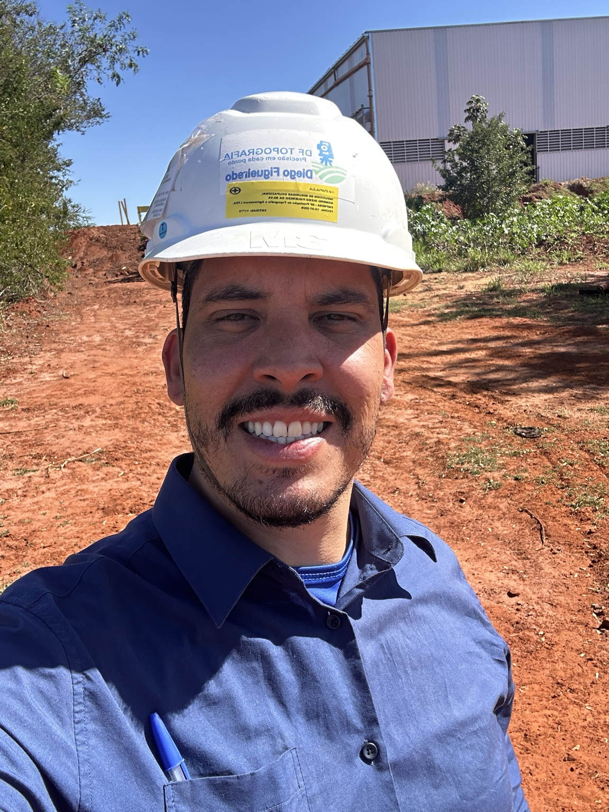
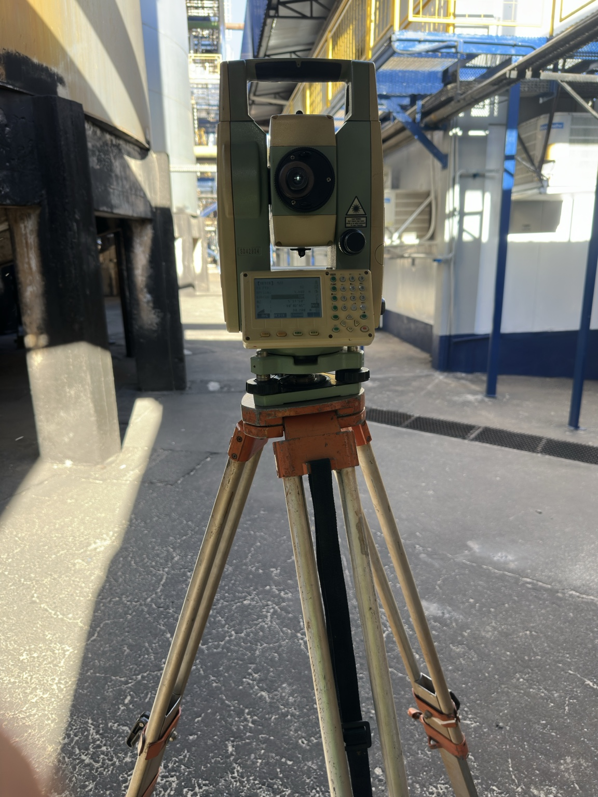
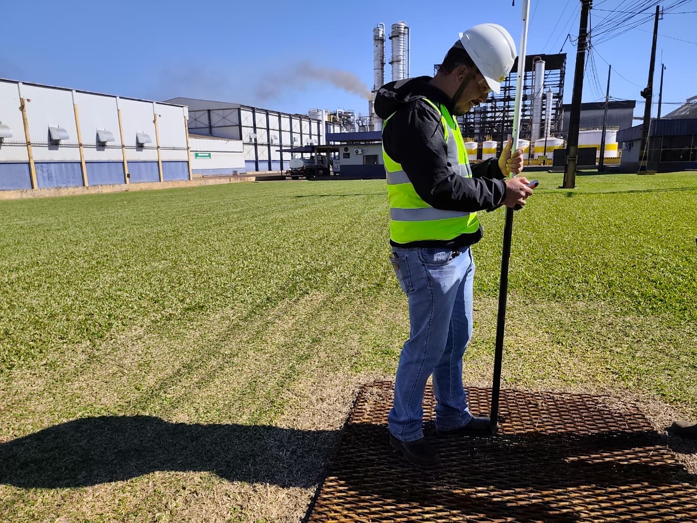
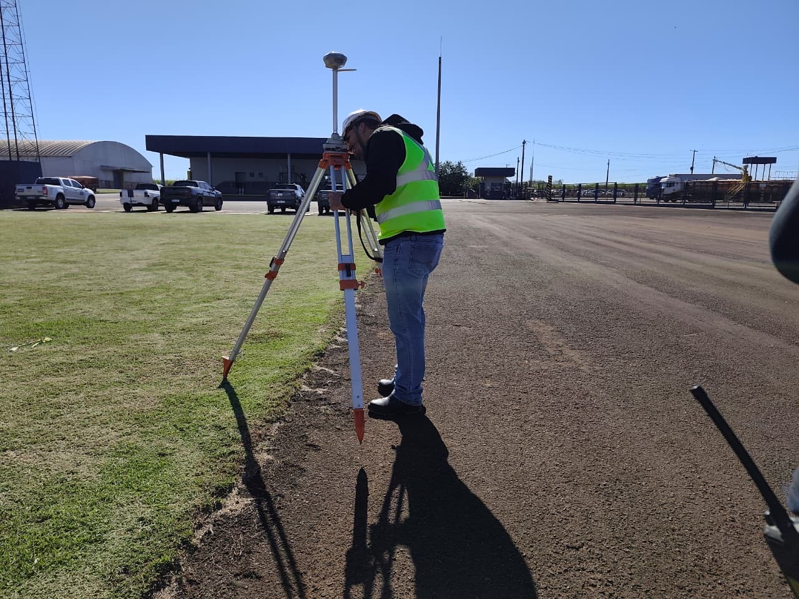
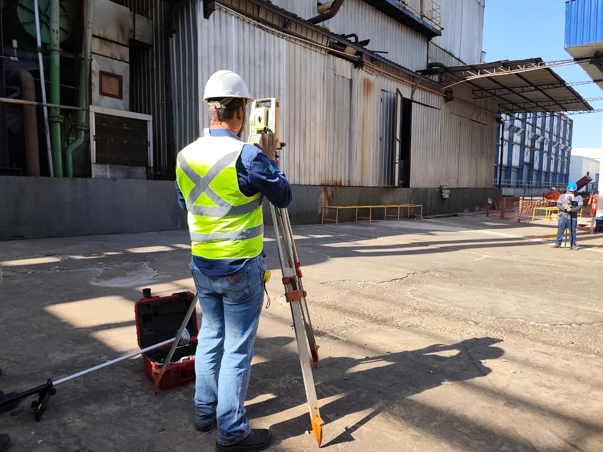

▱
Plantas e Memoriais
Elaboração de plantas, memoriais descritivos e arquivos técnicos organizados.
Levantamentos topográficos, georreferenciamento, regularização de áreas e apoio técnico para projetos e obras, com qualidade, precisão e confiabilidade.
Serviços para propriedades rurais e urbanas, construção civil, empresas, profissionais de engenharia e órgãos públicos.
Planimétrico, altimétrico e planialtimétrico para projetos, obras e regularizações.
Saiba mais →Levantamento e peças técnicas de imóveis rurais referenciadas ao Sistema Geodésico Brasileiro.
Saiba mais →Implantação de eixos, pontos, cotas e elementos definidos em projeto.
Saiba mais →Apoio técnico para retificações, desmembramentos, unificações e conferência de limites.
Saiba mais →Elaboração de plantas, memoriais descritivos e arquivos técnicos organizados.
Apoio técnico para Cadastro Ambiental Rural e demandas vinculadas a imóveis rurais.
Levantamentos para caracterização de profundidades e superfícies submersas conforme o escopo do projeto.
Conferência geométrica, apoio à implantação e controle topográfico durante a execução.
Peças técnicas e apoio documental para análise, regularização e tomada de decisão.
Registros reais da DF Topografia em levantamentos de campo com estação total e receptores GNSS.





A DF Topografia conecta levantamento de campo, processamento, análise técnica e documentação para entregar informações confiáveis a quem precisa projetar, construir, regularizar ou conhecer com precisão uma área.
O atendimento é voltado a clientes particulares, empresas, propriedades rurais, profissionais de engenharia e demandas do setor público.
Consulte disponibilidade para serviços em outras cidades do Estado de São Paulo.
Rua José Maria Cereijido Carretero, 402
Av. Barão do Rio Branco, 1015
Solicite uma análise do local e do escopo pelo WhatsApp.
Você envia cidade, localização, objetivo e documentos disponíveis.
Analisamos o escopo e apresentamos a proposta do serviço.
Realizamos medições, implantação ou conferências necessárias.
Processamos os dados e entregamos os arquivos e documentos previstos.
Preencha as informações abaixo para receber uma análise inicial do serviço. O pedido fica registrado com segurança e chega para nossa equipe.
Atendimento para propriedades rurais e urbanas, obras, empresas, profissionais de engenharia e demandas do setor público.